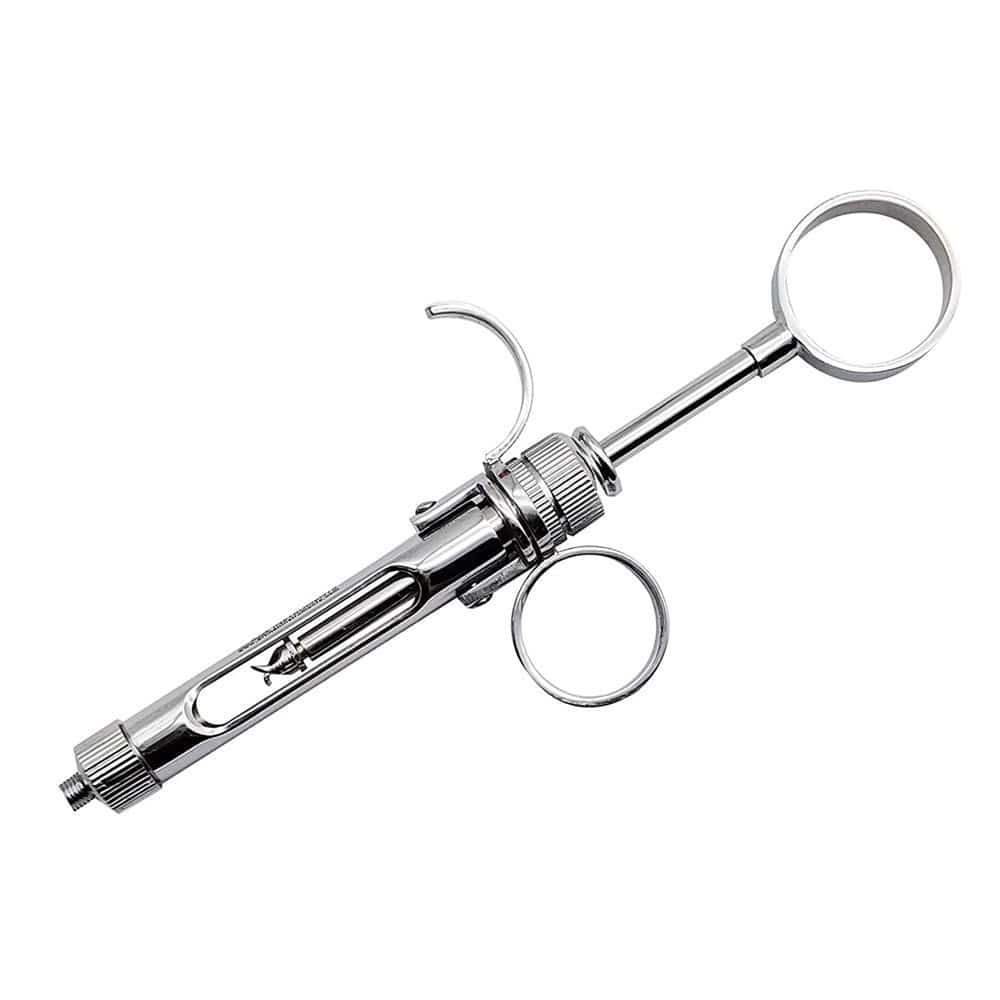
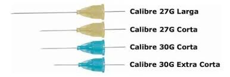

Pestaña: Instrumental de Anestesia

Jeringa CarpuleInstrumento metálico diseñado para administrar anestesia local mediante cartuchos. Incluye sistema de aspiración que evita la inyección intravascular.
Agujas cortas y largasLas agujas cortas se emplean en técnicas infiltrativas; las largas se utilizan para bloqueos tronculares como el nervio alveolar inferior.